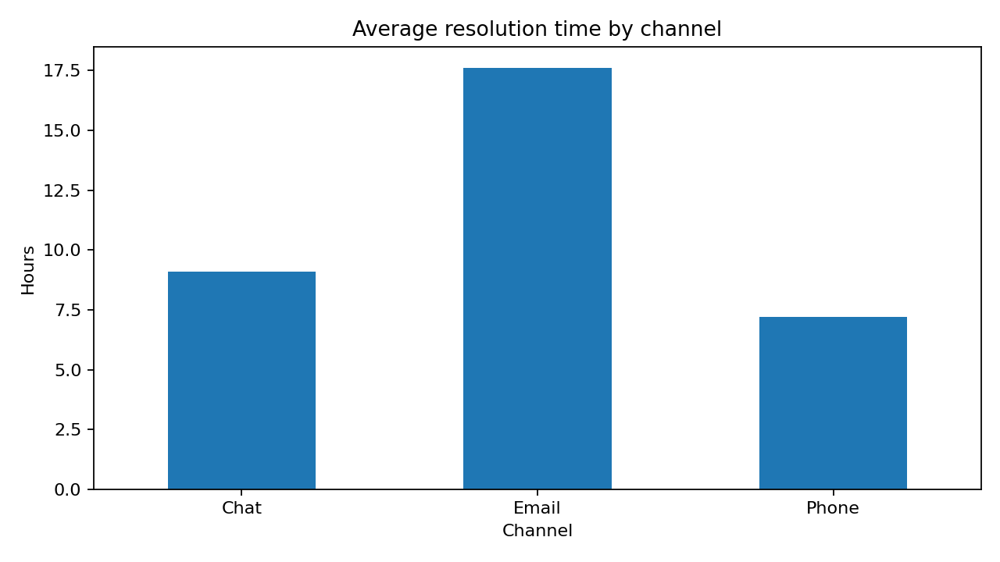

Customer Service Performance Analysis
Python · pandas · matplotlib | Synthetic dataset
Python · pandas · matplotlib | Synthetic dataset
Exploratory KPI analysis of 1,000 simulated customer support tickets. This is an independent demonstration using synthetic data, not employer records.

In this simulated dataset, Phone has the lowest average resolution time (7.22 hours). This does not establish causation.
Used pandas to load data, handle missing satisfaction values, group by channel and calculate ticket counts, resolution rate, mean resolution time and average reported CSAT. The chart was generated using matplotlib.
View Python codeDownload datasetProject documentation